Orientação Jurídica
Atendimento com advogadas voluntárias para orientação sobre direitos, medidas protetivas e acompanhamento de processos.
O SOS Mulher oferece acolhimento, orientação jurídica, apoio psicológico e capacitação profissional para mulheres em situação de vulnerabilidade.

O SOS Mulher é uma organização sem fins lucrativos fundada em 07 de dezembro de 1983, em São José dos Campos. Desde então, atua no acolhimento e suporte a mulheres em situação de vulnerabilidade e violência na cidade e região.
Nascemos da necessidade de oferecer um espaço seguro, gratuito e humanizado para mulheres que precisam de apoio. Desde 2023, sob nova diretoria, reforçamos nosso compromisso com a transformação de vidas através de atendimento especializado, orientação e capacitação.
Em 2024 e 2025, acolhemos mais de 600 mulheres, oferecendo orientação jurídica, encaminhamento psicológico e capacitação profissional. Somente em 2026, já realizamos mais de 200 atendimentos. Todo o nosso trabalho é 100% gratuito e sigiloso.
Atendimento com advogadas voluntárias para orientação sobre direitos, medidas protetivas e acompanhamento de processos.
Articulação com instituições de ensino que oferecem atendimento psicológico e terapêutico, promovendo saúde emocional e fortalecimento pessoal.
Cursos e treinamentos em parceria com instituições apoiadoras para promover independência financeira.
Articulação com Delegacia de Defesa da Mulher (DDM), Patrulha Maria da Penha, abrigos e outros serviços essenciais de proteção à mulher.
Ao longo de mais de quatro décadas, a SOS Mulher construiu uma história dedicada ao acolhimento, à orientação e ao fortalecimento de mulheres em situação de vulnerabilidade.
Fundação da SOS Mulher em São José dos Campos.
Início dos atendimentos jurídicos, psicológicos e sociais.
Ampliação do atendimento para conflitos conjugais e familiares.
Convênio para acolhimento em moradia provisória.
Criação da Casa de Acolhimento Provisório Sigiloso.
Fortalecimento dos atendimentos relacionados à Lei Maria da Penha.
Manutenção e unificação dos projetos de atendimento.
Pausa no atendimento em 2017 e retomada das atividades em 2023.
Início da direção atual, com fortalecimento dos atendimentos e parcerias.
Presidente
Vice-presidenta
Trabalhamos com respeito, acolhimento e comprometimento, oferecendo um atendimento humanizado e sigiloso. Nossa missão é fortalecer mulheres em situação de vulnerabilidade, promovendo autonomia emocional e financeira para a conquista de uma vida digna e independente.
Nosso único objetivo é ajudar mulheres em situação de vulnerabilidade, oferecendo acolhimento, orientação e apoio para que possam seguir com segurança e dignidade.
Contatos essenciais para situações de emergência e acompanhamento
Atendimento especializado para casos de violência contra a mulher.
Fiscalização do cumprimento de medidas protetivas.
Atendimento 24h para denúncias e orientações.
Atendimento humanizado e sigiloso para mulheres em situação de vulnerabilidade.
As medidas protetivas são garantidas pela Lei Maria da Penha e podem incluir:
Trabalhamos em conjunto com instituições comprometidas com o fortalecimento e a capacitação da mulher em São José dos Campos.
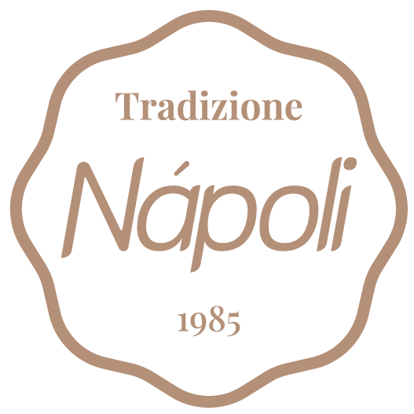
SN Sorveteria NapoliSua empresa, instituição de ensino ou organização pode contribuir com a nossa causa. Juntos, ampliamos o acesso a serviços essenciais e fortalecemos a autonomia das mulheres atendidas.
Visibilidade institucional e social
Impacto direto na vida de mulheres
Acesso a eventos e ações conjuntas
Faça parte da nossa equipe e ajude a transformar vidas. Seu tempo e dedicação podem fazer toda a diferença.
Entre em contato conosco através dos canais disponíveis.
Participe de treinamentos sobre acolhimento e atendimento.
Comece a fazer a diferença na vida de outras mulheres.
Advogadas, psicólogas, assistentes sociais, educadores, profissionais de comunicação e todas as pessoas dispostas a contribuir com a causa.
Palestras, cursos de capacitação e atividades comunitárias
Acompanhe @sosmulher.oficialsjc para ficar por dentro dos próximos eventos
Cursos e encontros para fortalecer autonomia e geração de renda.
Conversas sobre acolhimento, proteção, saúde emocional e direitos.
Atividades de desenvolvimento pessoal, profissional e comunitário.
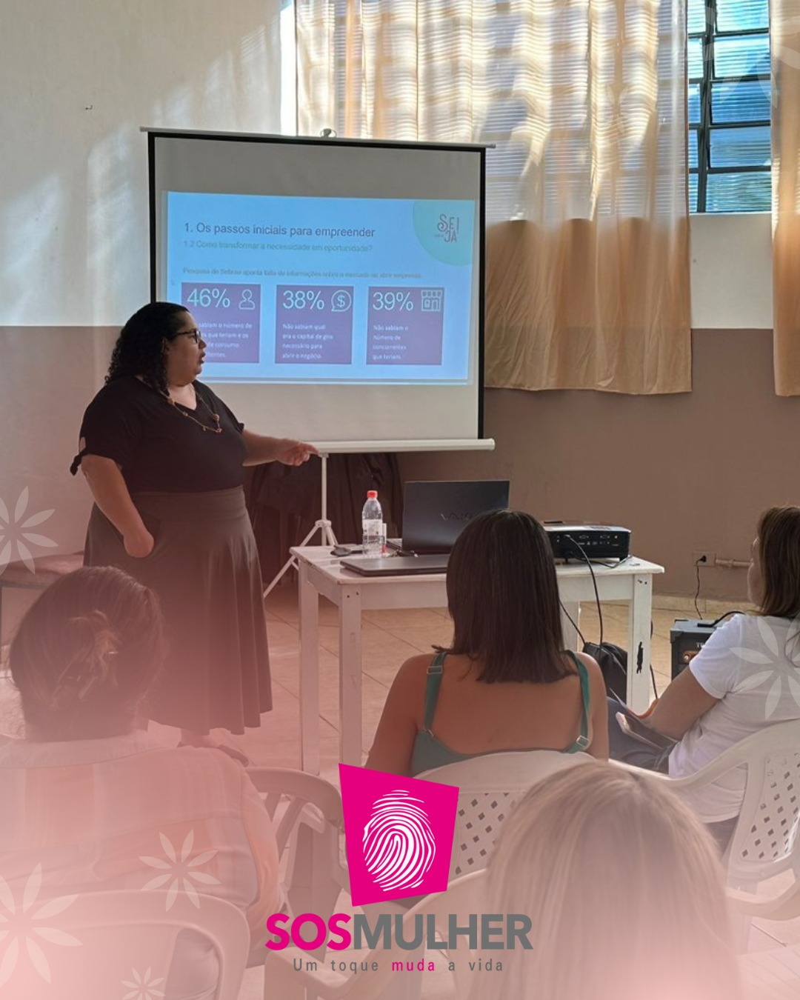
Imagem em breveFormação para autonomia financeira
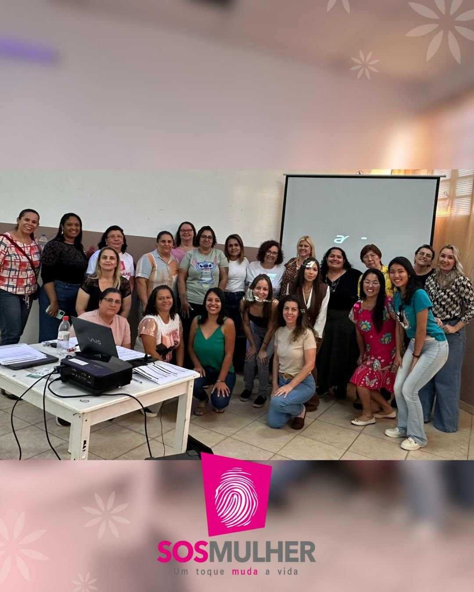
Imagem em breveAprendizado para novas oportunidades
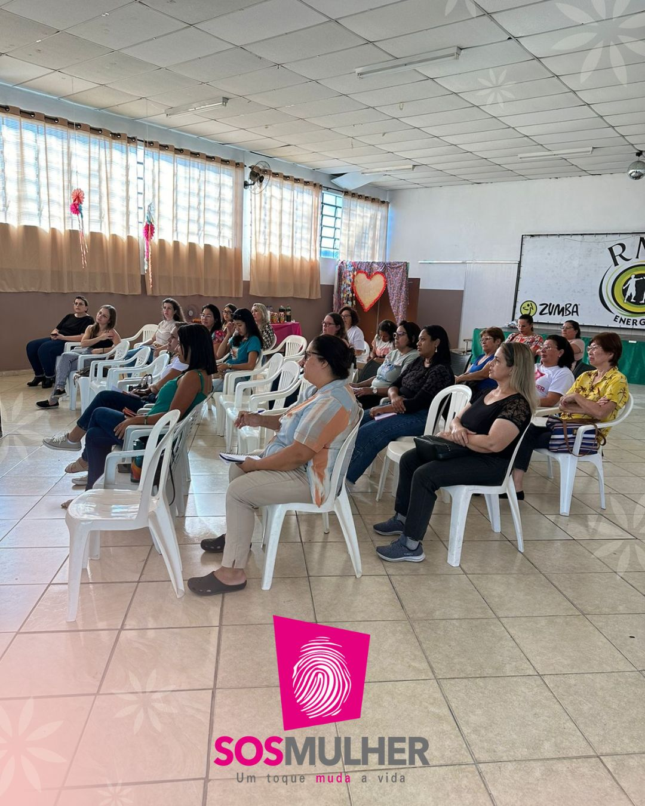
Imagem em breveDesenvolvimento pessoal e profissional
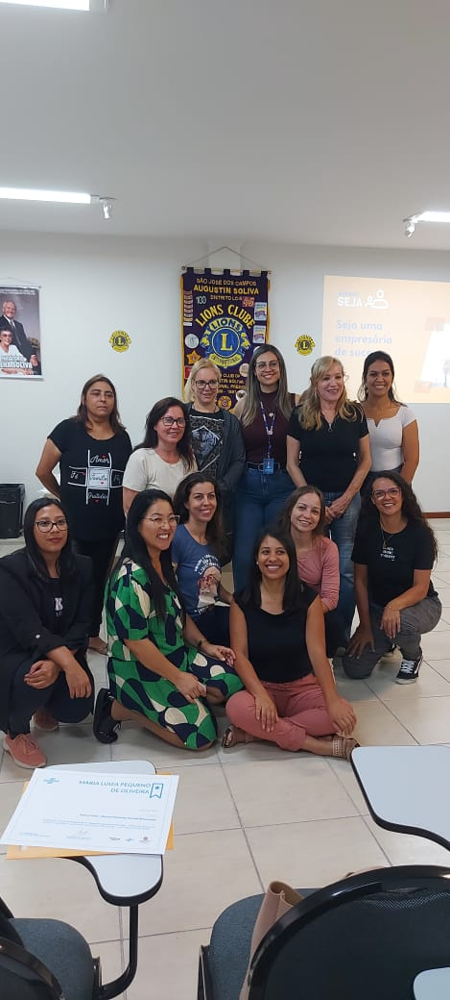
Imagem em breveAção realizada com apoiadores
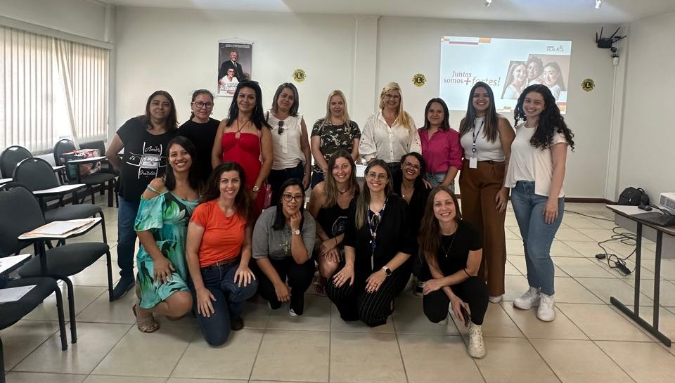
Imagem em breveCapacitação e troca de experiências
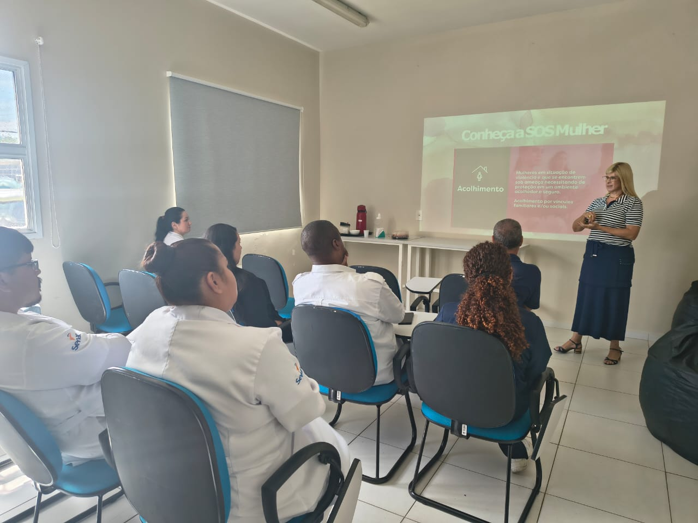
Imagem em breveAcolhimento, orientação e escuta
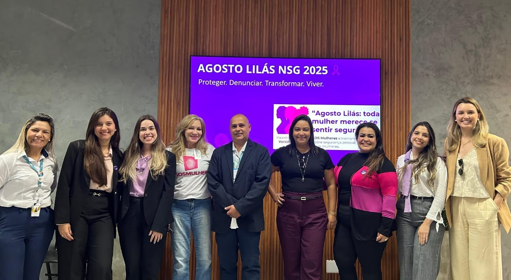
Imagem em breveInformação e fortalecimento
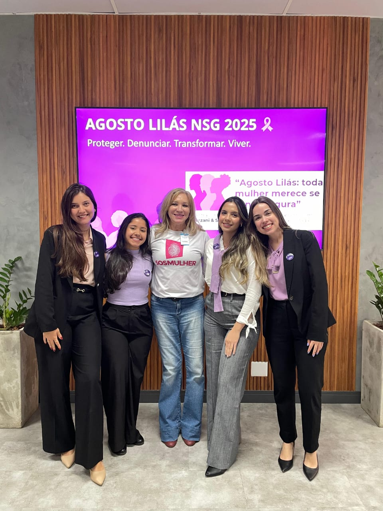
Imagem em breveAção de apoio e informação
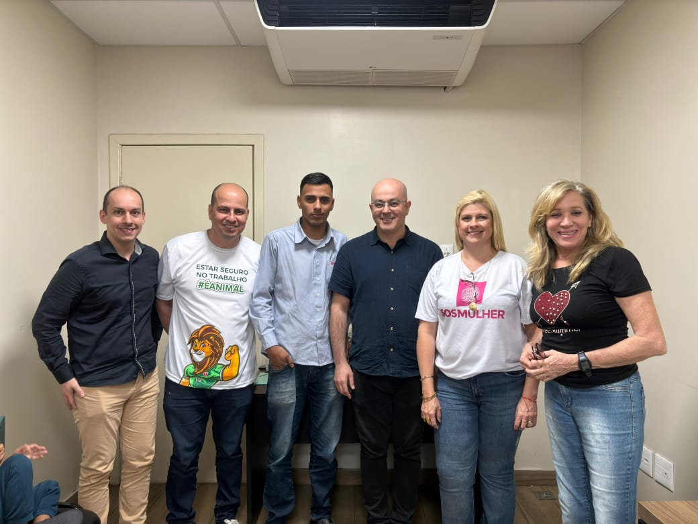
Imagem em breveInformação, apoio e cuidado
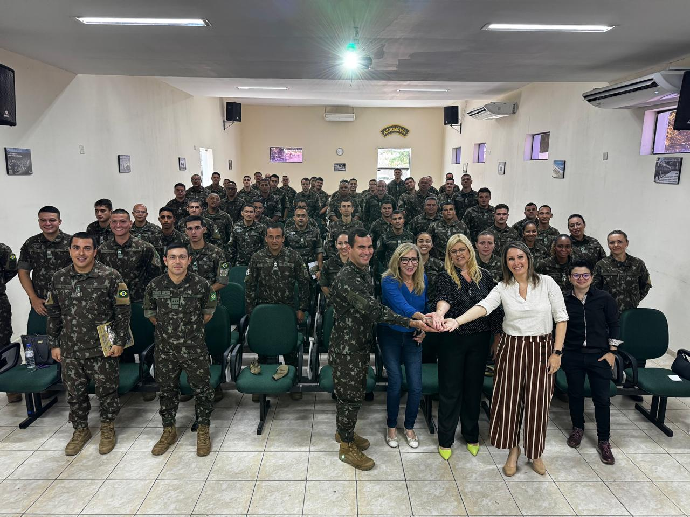
Imagem em breveConversa sobre apoio e proteção
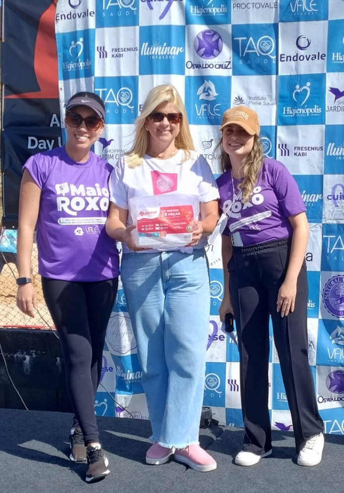
Imagem em breveRegistro de atividade realizada
Sua contribuição ajuda a manter nossos serviços e transformar a vida de centenas de mulheres.
Solicite os dados bancários e envie o comprovante pelo WhatsApp (12) 99220-9020.
Dentro do aplicativo do seu banco, aponte a câmera do celular para doar via PIX
Também aceitamos doações de:
Entre em contato para agendar a entrega de doações.
Toda contribuição, por menor que seja, faz a diferença!
Entre em contato conosco. Estamos aqui para ajudar.
Rua José Cobra, nº 1300
Sociedade Amigos do Bairro 31 de Março (Satomar)
Segunda a Sexta: 8h às 17h
Se você está em perigo imediato, ligue:
190 - Polícia Militar
180 - Central de Atendimento à Mulher (24h)
O SOS Mulher oferece atendimento acolhedor e sigiloso. Você pode entrar em contato pelo WhatsApp (12) 99220-9020, visitar nossa sede ou nos enviar um e-mail. A equipe fará uma escuta inicial e encaminhará você para os serviços necessários: orientação jurídica, apoio psicológico, capacitação profissional ou outros recursos da rede de proteção.
Sim! Todas as informações compartilhadas são tratadas com total sigilo e confidencialidade. A privacidade e segurança das mulheres atendidas é nossa prioridade. Nenhuma informação pessoal é divulgada sem autorização expressa.
Para o primeiro atendimento, não é necessário apresentar documentos. Porém, para alguns procedimentos jurídicos ou encaminhamentos específicos, pode ser solicitado RG, CPF, comprovante de residência e outros documentos. Mesmo sem documentação, você será acolhida e orientada sobre como obtê-los.
Todos os serviços do SOS Mulher são totalmente gratuitos. A orientação jurídica, apoio psicológico, encaminhamentos e cursos de capacitação não têm nenhum custo para as mulheres atendidas.
Sim, você pode ir acompanhada de pessoa de sua confiança. No entanto, em alguns atendimentos específicos, como avaliação psicológica ou consulta jurídica, pode ser necessário um momento individual para garantir sua segurança e privacidade.
Não! O SOS Mulher atende todas as mulheres em situação de vulnerabilidade, incluindo aquelas que buscam capacitação profissional, orientação sobre direitos, apoio emocional ou simplesmente precisam de acolhimento e escuta.
Não necessariamente. Você decide se quer ou não fazer um boletim de ocorrência. Nossa equipe pode orientá-la sobre a importância do registro policial e acompanhá-la nesse processo, mas a decisão é sempre sua.
O tempo de acompanhamento varia conforme cada caso e necessidade. Alguns atendimentos são pontuais, enquanto outros podem durar meses, especialmente nos casos de capacitação profissional ou acompanhamento jurídico contínuo.
É completamente normal sentir vergonha ou medo, mas saiba que você não está sozinha. Nossa equipe está preparada para acolher sem julgamentos. Você pode começar com um contato anônimo pelo WhatsApp para tirar dúvidas antes de se identificar.
Entendemos que sair de um relacionamento abusivo é um processo complexo e que pode haver idas e vindas. Nossa porta está sempre aberta, sem julgamentos. Você pode retornar ao atendimento quantas vezes precisar.